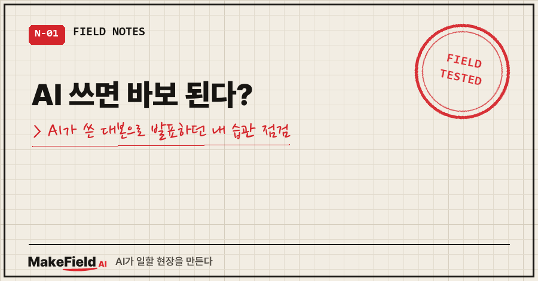
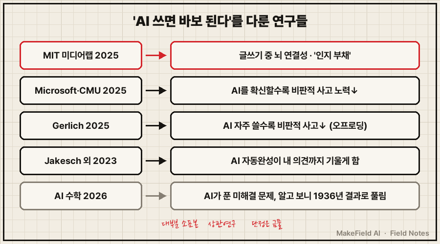
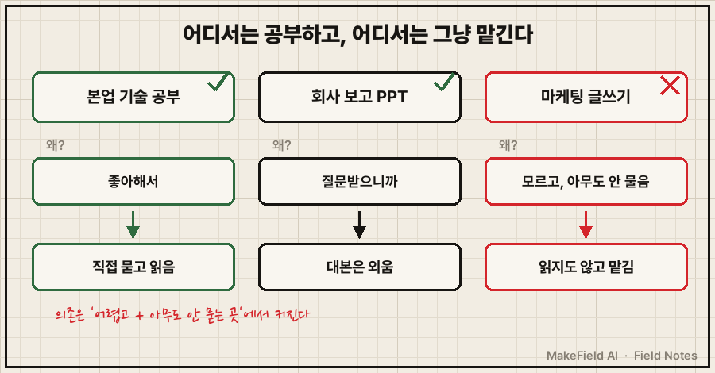
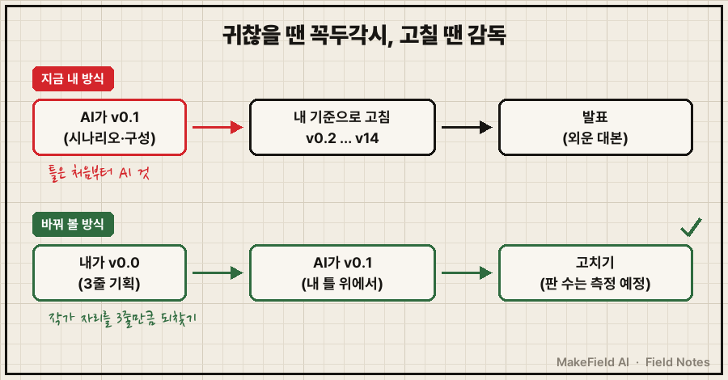
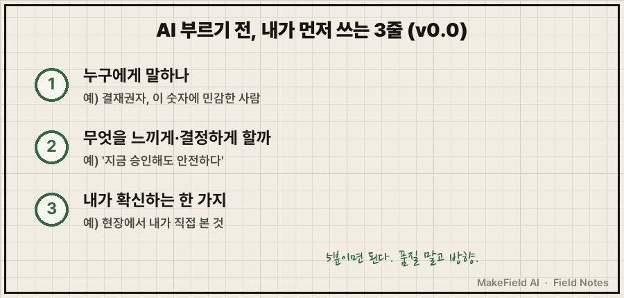

새벽 6시, 야간 근무를 마치고 AI한테 이런 말을 털어놨어요.
"AI를 쓰면 인류가 바보가 된다는 이슈… 이게 내 사례이기도 하다."
이 글은 그 대화를 거의 그대로 옮긴 기록이에요. 제가 털어놓고, AI가 반박하고, 제가 다시 정정하고. 다섯 번 주고받는 동안 처음 생각이 꽤 바뀌었거든요.
한 줄 요약: 'AI 쓰면 바보 된다'는 걱정을 다룬 연구들(MIT 미디어랩 2025, Microsoft·카네기멜런대 2025 등)은 "AI가 잘할 거라 믿을수록, 그리고 내 실력에 자신 없는 영역일수록 사람이 생각을 덜 한다"는 쪽을 가리켜요. 제 경우도 똑같았어요. 좋아하는 공부와 질문받는 발표는 직접 챙기는데, 잘 모르는 마케팅은 읽지도 않고 맡기고 있었습니다.
저는 15년째 제조 현장에서 자동화·제어 일을 하는 엔지니어고, 개인 PC에 AI 비서를 붙여 놓고 하루 대부분의 잡무를 맡기며 지내요. 그래서 이 걱정이 남 얘기가 아니었습니다.
1. 시작: "인간이라서 어쩔 수 없는 것 같다"
제가 처음 쏟아낸 말을 거의 그대로 옮길게요(맞춤법만 조금 손봤어요).
"요즘 귀찮은 엑셀 수식 맞추는 거나 파일 정리, 찾는 거 같은 간단 업무는 전부 AI를 돌려서 처리한다. 그런데 자료가 구조적으로 잘 되어 있고 모델도 좋아지다 보니, 회사 보고용 PPT나 Word 문서도 직접 적을 생각을 안 하고 AI에게 의존하게 된다."
"할 일 목록은 그냥 핸드폰 꺼내서 입력하면 되는데, PC 앞에 있으니 키보드로 AI한테 넣어 달라고 한다."
"본업 기술 공부는 물어보면서 열심히 읽는데, 마케팅 글 쓰는 법은 그냥 AI한테 자료 조사해 오라 하고, 뭘 조사해 왔는지 검토도 안 하고 맡긴다."
"인간은 어쩔 수 없는 것 같다. 뇌는 편안해지는 걸 좋아하니까. 그 사람의 그릇 문제가 아니라 그냥 인간이라서 그런 것 같다."
그리고 끝에는 이렇게 적었어요.
"걱정하면 뭐 하리? AI 시대에 혼자 낙오되리? … 뭐가 정답인지 모르겠다. 일단은 그냥 열심히 써 보자, 생각 없이."
수학 쪽 뉴스도 하나 마음에 걸렸어요. 수학은 결국 규칙이고, 계산·추론·증명은 AI가 더 잘하니 수학자가 할 일이 사라질 거라는 얘기였죠.
2. 'AI 쓰면 바보 된다' — 실제 연구는 뭐라고 하나요

AI에게 사례를 찾아 달라고 했고, 원문으로 하나씩 확인했어요. 전문 용어로는 인지적 오프로딩(cognitive offloading), 생각할 일을 도구에 넘기는 것이라고 부르고, 그게 쌓여서 내 실력이 줄어드는 상태를 MIT 연구진은 인지 부채(cognitive debt) 라고 이름 붙였어요.
| 연구 | 누구를 어떻게 봤나 | 무엇이 나왔나 | 조심할 점 |
|---|---|---|---|
| MIT 미디어랩 「Your Brain on ChatGPT」(Kosmyna 외, 2025) | 54명이 4개월간 에세이 작성, 뇌파(EEG) 측정. ChatGPT·검색·맨머리 3그룹 | 뇌 연결성 맨머리 > 검색 > ChatGPT. 첫 회차 ChatGPT 그룹 18명 중 15명(83%)이 몇 분 전 쓴 자기 글을 정확히 인용하지 못함(맨머리·검색 그룹은 대부분 인용). 마지막 회차에 AI를 끊은 9명도 연결성이 낮게 유지 | 아직 동료 심사 전 논문, 소표본. 인용 실패는 회차가 갈수록 회복됨 |
| Microsoft·카네기멜런대 (Lee 외, CHI 2025) | 지식노동자 319명, 실제 AI 사용 사례 936건 설문 | "AI가 잘할 거라는 확신이 높을수록 비판적 사고를 덜 하고, 자기 확신이 높을수록 더 한다." 생각이 정보 수집→검증, 문제 해결→AI 답 통합, 실행→관리로 이동 | 능력 시험이 아니라 본인이 답한 설문 |
| Gerlich (Societies, 2025) | 영국 666명 설문 | AI를 자주 쓸수록 비판적 사고 점수가 낮음. 생각을 도구에 넘기는 습관(인지적 오프로딩)이 그 관계를 부분적으로 설명. 젊을수록 의존 높음, 학력이 높으면 AI 사용과 무관하게 점수 높음 | 한 번 설문(상관이지 인과 아님) |
| Jakesch 외 (CHI 2023) | 1,506명이 AI 자동완성을 켜고 "소셜미디어는 사회에 좋은가" 글쓰기 | AI를 한쪽 의견으로 기울여 두자, 그 AI와 쓴 사람은 같은 쪽 주장을 쓸 확률이 2.04배. 글을 다 쓴 뒤 설문 의견까지 기울었음(45% vs 35%) | 효과 크기는 작음(d=0.22) |
| AI 수학 (2026-01) | GPT-5.2 Pro가 에르되시 문제 281번 풀이 제시 | 테렌스 타오가 "지금까지 가장 분명한 사례"라고 기록 | 다음 날 타오 본인이 1936년 기존 결과로 바로 풀리는 문제였다고 정정. "AI가 인류 미해결 문제를 처음 풀었다"는 틀린 표현 |
수학 뉴스는 원문을 따라가 보니 생각보다 덜 무서웠어요. AI가 증명을 내놓은 건 사실이지만, 그 문제는 이미 90년 전 결과로 풀 수 있는 거였어요. 그래도 방향은 분명하죠. 규칙 위에서 계산하고 증명하는 일은 AI가 점점 더 잘하게 될 거예요.
표만 보면 무섭죠. 그런데 이 연구들은 대부분 표본이 작거나, 설문으로 "같이 나타난다"는 상관을 본 거예요. "AI가 뇌를 망가뜨린다"는 기사 제목은 연구 내용보다 앞서 나간 표현입니다. 저는 이 연구들을 "조심하라는 신호" 정도로 읽어요.
3. 첫 번째 반박: 귀차니즘은 골고루 생기지 않는다
AI가 제 말에서 걸리는 부분을 짚었어요.
"'인간이라서 어쩔 수 없다'는 말을 본인 사례가 반증한다. 본업 공부는 직접 묻고 읽으면서, 마케팅은 검토도 안 하고 맡긴다. 귀차니즘이 골고루 생기는 게 아니라, 넘길 곳을 고르고 있는 거다."
맞는 말이었어요. 저도 덧붙였죠.
"회사 PPT는 열심히 본다. 남에게 설명해야 하고 질문이 들어왔을 때 답해야 하니까. 하지만 마케팅? 나 잘 모르는데… 얘가 더 잘하겠지… 하는 막연한 생각으로 안 한다."

정리하면 세 칸이에요.
| 영역 | 내 행동 | 이유 |
|---|---|---|
| 본업 기술 공부 | 직접 묻고 읽음 | 좋아해서 |
| 회사 보고 PPT | 내용은 외움 | 질문을 받으니까 |
| 마케팅 글쓰기 | 읽지도 않고 맡김 | 잘 모르고, 아무도 나한테 안 물어봐서 |
Microsoft·카네기멜런대 연구 결과와 똑같은 그림이에요. AI가 잘할 거라 믿을수록, 내 실력에 자신이 없을수록 생각을 덜 한다. 제 예상을 고쳐 쓰면 이렇습니다. AI 의존은 '어렵고, 아무도 나한테 묻지 않는 영역'에서 가장 빨리 커진다.
4. 두 번째 정정: 나는 AI가 쓴 대본을 연기하는 배우였다
AI가 처음엔 "회사 PPT도 AI에 의존하면 보고 자리에서 질문받을 때 막힐 것"이라고 했는데, 저는 아니라고 했어요. 질문 대비는 해요. 진짜 문제는 다른 데 있었어요.
"내가 충분한 내용 검토나 생각을 안 하고 AI에게 시킨다. 그럼 AI의 시나리오가 나온다. 난 그냥 배우처럼, 나온 시나리오대로 꼭두각시처럼 하는 거다. 그게 가장 큰 문제다. AI도 잘하겠지만, 사람들의 감성을 아우르는 경험과 촉과 느낌으로 하는 것도 좋은데… 그냥 맡긴다. 귀찮으니까."
대본은 열심히 외우는데, 무엇을 말할지는 AI가 정하고 있었던 거예요. 겉으로 보면 준비 잘 된 발표자라서 저도 남도 문제를 못 느껴요.
연구도 이 장면을 비슷하게 묘사해요. Microsoft·카네기멜런대 연구에서는 AI를 쓰면 사람의 생각이 '직접 만드는 일'에서 'AI가 만든 걸 확인하고 다듬는 일'로 옮겨 간다고 했어요. MIT 연구에서는 AI로 글을 쓴 사람들이 그 글을 '내 글'이라고 느끼는 정도가 낮았고요. 첫 회차에 맨머리로 쓴 18명 중 16명이 "완전히 내 글"이라고 답했는데, ChatGPT로 쓴 그룹은 18명 중 9명뿐이었어요. 작가에서 배우로 바뀌는 거죠.
AI가 하나 더 짚었어요. 귀찮아서 내려놓고 있는 게 하필 사람만 가진 부분이라는 거예요. 이 자리에서 이 사람들이 무엇을 느껴야 하는지 아는 감은 현장에서 쌓은 거라 AI에게는 없습니다.
5. 세 번째 정정: 14판까지 고치는데, 그래도 걱정되는 것
그런데 저는 그냥 꼭두각시만은 아니었어요.
"PPT 만들 때 보면 버전이 엄청 올라간다. AI 시나리오가 맘에 안 들어서 내 시나리오대로 고친다. 14판 넘게 나올 때도 있다. 내 기준이 있으니까. 문제는 이런 방식으로 오래 하면 힌트 없이는 시작도 못 하고, 창조도 안 될 것 같다는 거다. 그런데 또 걱정인 건, 내가 몇 시간 걸려 처음부터 만들어 봐도 처음 0.1판은 아무리 생각해도 AI가 나보다 잘 만든다. 그래서 어쩔 수 없이 그렇게 쓴다."

귀찮을 땐 꼭두각시, 고칠 땐 감독. 둘 다 저예요.
AI의 답은 이랬어요. 첫 판 품질로 AI와 겨룰 필요는 없다. 사람이 첫 단계에 손대는 의미는 품질이 아니라 방향이다.
그리고 14판까지 가는 이유 중 하나로 '틀'을 짚었어요. AI가 먼저 구성을 짜면 저는 그 틀 안에서 고치게 돼요. 내 시나리오로 돌아가는 데 판이 쌓이는 거죠. 실제로 2023년 Jakesch 연구진의 실험(1,506명)에서는, 한쪽 의견으로 기울여 둔 AI 자동완성과 함께 글을 쓴 사람들이 그쪽 주장을 쓸 확률이 2.04배였고, 글을 다 쓴 뒤 설문에서 답한 의견까지 따라 기울었어요. AI가 먼저 깐 틀은 생각보다 힘이 셉니다.
6. 그래서 정한 것: AI 부르기 전 3줄(v0.0)

0.1판은 AI에게 맡겨요. 대신 그 전에 '0.0판' 3줄만 제가 씁니다.
- 누구에게 말하나 — 예) 결재권자, 이 숫자에 민감한 사람
- 무엇을 느끼게·결정하게 할까 — 예) "지금 승인해도 안전하다"
- 내가 확신하는 한 가지 — 예) 현장에서 내가 직접 본 것
5분이면 돼요. 시작하는 근육은 이 정도로 유지하고, 틀이 처음부터 내 것이니 판 수도 줄지 모릅니다. 다음 보고서에서 실제로 몇 판까지 가는지 세어 볼 생각이에요. 이 방법이 정답인지는 저도 아직 몰라요. 해 보고 숫자로 다시 적겠습니다.
마케팅처럼 아무도 저에게 묻지 않는 영역에는 질문할 사람을 일부러 세우려고 해요. 마케팅이라면 그 질문자는 조회수와 판매량이에요. AI가 조사해 온 자료는 적어도 한 번 읽고, 그 숫자 앞에서 제 말로 설명해 보는 것부터요.
7. 자주 묻는 질문
Q. AI 쓰면 정말 바보가 되나요?
지금 연구로는 단정할 수 없어요. MIT 연구는 참가자 54명의 아직 동료 심사 전 논문이고, Microsoft·Gerlich 연구는 설문으로 "같이 나타난다"는 상관을 본 거예요. 다만 세 연구 모두 같은 방향, 즉 "생각을 넘길수록 그 생각을 내가 덜 하게 된다"를 가리켜요.
Q. 그럼 AI를 덜 써야 하나요?
저는 덜 쓰지 않을 거예요. 할 일 목록 입력, 엑셀 수식, 파일 찾기처럼 결과만 필요한 일은 계속 맡깁니다. 계산기를 쓴다고 바보가 되진 않으니까요. 조심할 건 '내가 설명해야 하는 판단'까지 넘기는 거예요.
Q. 첫 초안은 AI가 사람보다 잘 쓰는데, 직접 쓸 이유가 있나요?
품질로는 이유가 없어요. 이유는 방향이에요. 누구에게 무엇을 느끼게 할지 정하는 3줄만 직접 쓰면, 나머지는 AI에게 맡겨도 '내 발표'로 남습니다.
8. 마치며: 생각 없이 쓰지 말고, 3줄만 생각하고 쓰기
처음 제 결론은 "일단 열심히 써 보자, 생각 없이"였어요.
반은 맞았어요. 쓰는 건 맞아요. AI 덕분에 공부에 접근하는 길은 전보다 훨씬 넓어졌으니까요. 문제는 '생각 없이'였어요. 연구가 경고하는 게 정확히 그 상태거든요.
그래서 이렇게 고쳤습니다. AI는 열심히 쓰되, 부르기 전에 3줄만 생각하고 쓴다.
이 글도 AI와 같이 썼어요. 그래서 대화에서 나온 제 말은 고치지 않고 옮겼습니다. 이 3줄이 실제로 효과가 있는지는 다음 보고서 판 수로 확인해서 다시 올릴게요.
여러분은 AI에 맡긴 일 중에, 누가 물어보면 내 말로 설명 못 할 것이 있으신가요?
참고한 연구 원문 (전부 원문 PDF로 확인, 2026-10-14)
- Kosmyna, N. 외 (2025). Your Brain on ChatGPT: Accumulation of Cognitive Debt when Using an AI Assistant for Essay Writing Task. arXiv:2506.08872 (동료 심사 전). https://arxiv.org/abs/2506.08872
- Lee, H.-P. 외 (2025). The Impact of Generative AI on Critical Thinking: Self-Reported Reductions in Cognitive Effort and Confidence Effects From a Survey of Knowledge Workers. CHI 2025. https://doi.org/10.1145/3706598.3713778
- Gerlich, M. (2025). AI Tools in Society: Impacts on Cognitive Offloading and the Future of Critical Thinking. Societies 15(1), 6. https://doi.org/10.3390/soc15010006
- Jakesch, M. 외 (2023). Co-Writing with Opinionated Language Models Affects Users' Views. CHI 2023. https://doi.org/10.1145/3544548.3581196
- Erdős Problems #281 토론 스레드 (2026-01). https://www.erdosproblems.com/forum/thread/281